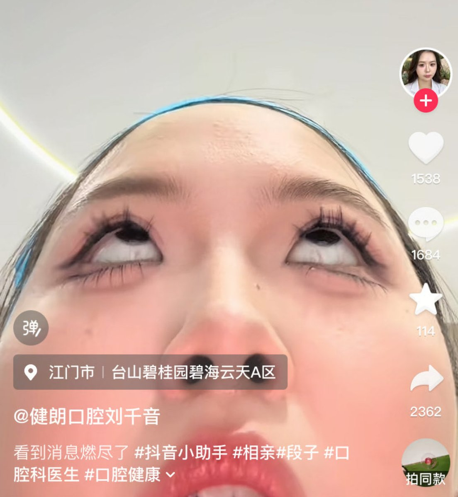

f hv
@fhv932189957574
@chennan789 第二张我以为是串子，真的牛逼

陈哥
@chennan789
一名女护士晒自己被相亲对象气到翻白眼，原因仅仅是相亲对象发了一句：“一起吃饭吗”。
女护士发到网上后本以为会被共情，没想到都在骂她，一句普通的问候都能挨骂，这不是自己在网暴自己吗。
不娶护士的原因就在这：总把自己工作的情绪带回家里，然后发泄出气在男友老公身上。 https://t.co/xEdWUKhTOr